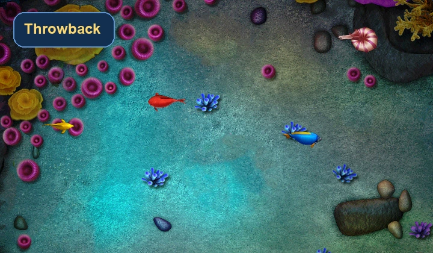

What I miss most about older browser arcade games is not the tech. It is the directness. You opened the page, figured out the goal in seconds, and started chasing a score. Very little stood between curiosity and play.
They did not waste the first minute
That sounds simple, but it is rare. A lot of modern pages still act like the visitor wants a tour before a game. Older arcade games usually skipped that. The screen showed you enough to begin, and the rest came from repetition. That is a big reason simple web games are still so effective when the layout stays out of the way.
Simple rules made room for real rhythm
Older browser games were often easier to read than people give them credit for. Maybe the art was lighter and the sound was thinner, but the goal stayed obvious. You learned through rhythm. Shoot here. Dodge there. Time the next move a little earlier. That feeling is still the backbone of good fishing games now.
On Ocean Arcade Game, that same clarity is what makes Deep Sea Mode work. The game does not need a giant explanation block because the motion is doing the teaching.
Short runs are not a weakness
One thing old browser games understood before everyone started overthinking “engagement” is that a short run can be satisfying on its own. You do not always need a giant progression tree. Sometimes one clean loop and one more try are enough.
That is also why fishing games still fit the web so well. They turn small decisions into momentum quickly. You line up one shot, then another, then another, and suddenly you have been playing longer than planned.
Clear presentation still matters more than buzzwords
The older games that aged best were not the ones with the biggest claims. They were the ones with the clearest screens. That lesson still applies. A homepage full of filler cards and generic promises can make a playable game feel smaller than it is. A cleaner game-first page can do the opposite.
If you want the site to feel real, you do not need to describe it like a product pitch. You need it to behave like a place where people actually come to play.
Why the old feeling still works now
Even with better rendering and better devices, the underlying appeal has not changed much. People still like readable movement, quick retries, and small bursts of progress. The modern win is not replacing that structure. It is preserving it while making the art, motion, and controls feel smoother.
If you want to compare the old appeal with a newer presentation, open Ocean Hunter for the brisker route, then jump back to the dedicated game page and notice how much smoother the same arcade logic feels when the layout gives it room.